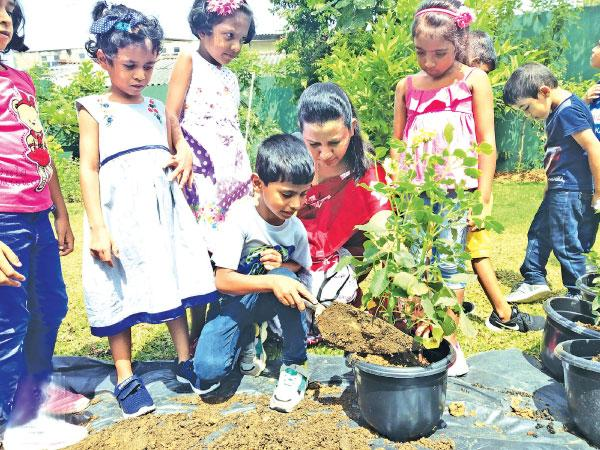

We as a team thuruliya our travelling expedition years back
to explore the miracles and adventures of the mother nature.
We hold that nature is beyond all the comparisons that need
to be cared, loved, cherished and preserved for generations
of generations to come. In truth, if we as humans neglect our
duty of taking the depletion of natural resources like trees,
water, soil seriously to manage the little amounts of such
resources left sustainably, our future generations will face a
scarcity of them or will run out of them completely.That is the
sole reason which made us to lead our way to start "Thuru Liya"
which will be a small step yet an impactful one if you all join
your hands together with us to bless the earth with more trees to
give a new life to our Earth and make it a better place for generations
and generations of the human race.
Read More

Education and Awareness
"Thuruliya" main education programs are conducted campaigns that create awareness
amongst school children in the selected program areas. The programs include
information on how to safely interact with and approach with the environment,
methods people can use to protect the nature how to be a responsible nature
lover and information on basic environmental care and treatments. Embark also
conducts awareness campaigns to keep the public informed of a environmental issues,
to promote kindness, compassion and end cruelty towards nature by using social media.